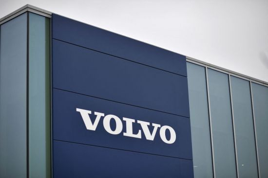

볼보차 "1000㎞ 주행 전기차 만들 것"…전기차 로드맵 발표
2021.07.01. 오후 1:24
스웨덴 볼보자동차가 10년 이내에 1회 충전으로 1000㎞ 주행이 가능한 전기차를 내놓겠다고 밝혔다. 볼보차는 지난달 30일(현지시간) 스웨덴 고텐버그에서 열린 '테크 모멘트'(Tech Moment) 행사에서 이같이 전하며 2030년까지 완전한 전기차 제조사가 되겠다는 포부를 밝혔다. 볼보차는 행사에서 전기차 배터리 공급 계획·자체 소프트웨어 개발 확대 계획·차세대 안전 기술 등을 소개했다. 하칸 사무엘손 볼보차 최고경영자(CEO)는 "우리 목표는 모든 사용 가능한 기술을 이용해 가능한 한 가장 안전한 차를 만들어내는 것"이라고 말했다. 볼보차는 스웨덴 배터리업체인 노스볼트와 협력해 현재 시장에서 공급되는 배터리 셀보다 50% 이상 에너지 밀도가 높은 배터리를 10년내 출시한다는 계획이다. 양사는 향후 유럽 배터리 공장 건립도 계획하고 있다.